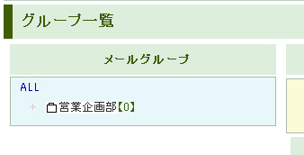

１、メールアドレスのグループ管理
登録したメールアドレスは、好きなグループに分けることができます。
グループの管理は「グループ追加／修正／削除」から行うことができます。
グループの追加
お好きなグループ名を入力して「グループの新規追加」を押します。
すると左の「メールグループ」のところに追加されます。
【0】 というのは、所属しているメールアドレスの件数を表しています。

グループの下にさらにグループを作ることができます。
まずは新しくできた「営業企画部」をクリックします。
出てきた画面の下の段に新しく追加するグループを入力すると第2階層目のグループができます。
追加されると、左の「メールグループ」に表示されます。